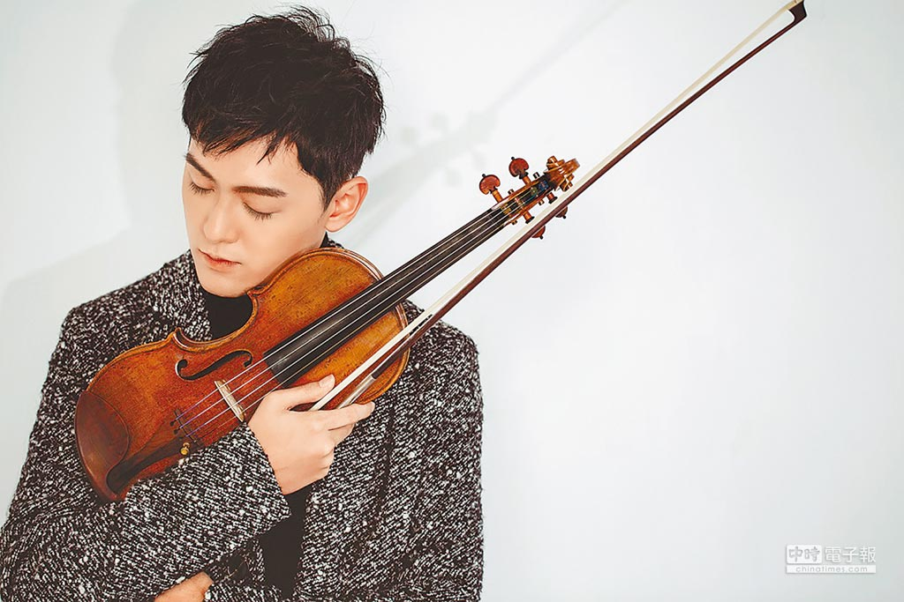

曾宇謙 Yu-Chieng Tseng

曾宇謙的簡介:
小提琴家曾宇謙1994年出生於台北，5歲開始學琴，6歲即受邀與台北市立交響樂團合作演出協奏曲。9歲榮獲三個全國性小提琴比賽第一名，11歲首次參加國際性比賽，即在世界知名的曼紐因國際青少年比賽中脫穎而出，以最小年紀榮獲第三名，旋即獲頒奇美獎學金特別獎。在台灣時受教於林柏山老師、沈英良老師、李宜錦老師以及陳沁紅老師，2008年前往以培養國際級音樂家著名的美國寇蒂斯音樂學院學習。
在美期間，師從Ida Kavafian 教授學習，繼續藉由比賽來磨練自己，創下皆以最年輕入選並獲獎的紀錄，包含：2009年西班牙薩拉沙泰國際小提琴比賽首獎及最佳演奏獎；2010年義大利帕格尼尼國際小提琴比賽協奏曲最佳演奏獎；2011年俄國柴可夫斯基國際小提琴比賽評審團特別獎、韓國尹伊桑國際小提琴比賽第一名及最佳詮釋獎；2012年比利時伊莉莎白國際小提琴比賽第五名及觀眾票選第一名，隨即被比利時知名唱片公司 Fuga Libera 相中，錄製首張個人專輯，並於40餘國家同時發行。2015 年他更以優異表現贏得了新加坡國際小提琴比賽第一名，以及俄國柴可夫斯基國際音樂比賽最高獎項。除了比賽之外也積極參加各種演出，曾合作過的職業樂團有：國家交響樂團、台北市立交響樂團、台灣弦樂團、美國費城管弦樂團、西班牙納瓦拉交響樂團、比利時國家交響樂團、比利時瓦隆尼亞皇家室內樂團等，並受邀多場獨奏會的演出。未來仍陸續有多場獨奏會和與樂團合作的演出，及新的專輯錄音計畫。